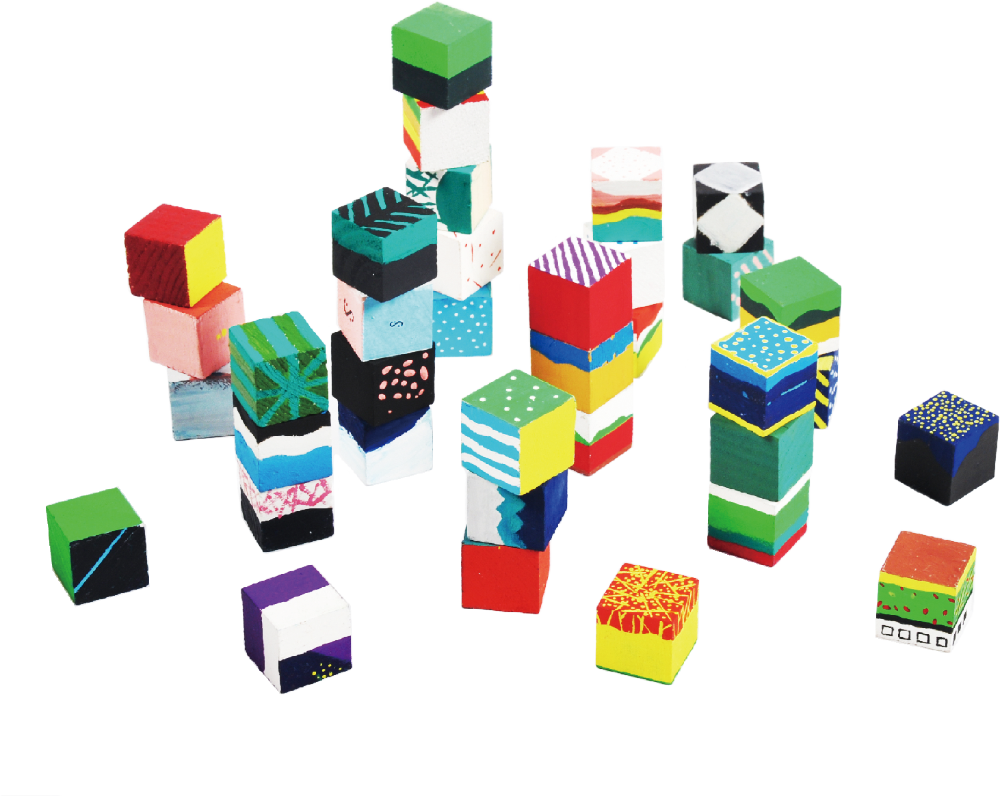

SQUARE
POEM
方块诗
Experimental Traditional
Chinese Poetry
2017
我家洗砚池头树, 朵朵花开淡墨痕The long on my washing inkstone pool of plum trees, flowers have pale ink marks.
中庭地白树栖鸦Few crows inhabit on a white tree,
which stands in the middle of the atrium.
墙角数枝梅，凌寒独自开At a wall corner some plum trees grow;
Alone against cold white blossoms blow.
黄四娘家花满蹊，千朵万朵压枝低Flowers full of the path, so many posies heavy their branches,
In the garden of Huangsiniang's.
耿耿星河欲曙天Bright shone the Milky Way, daybreak seemed to come late.
风雪夜归人The latecomer return at a storm night.